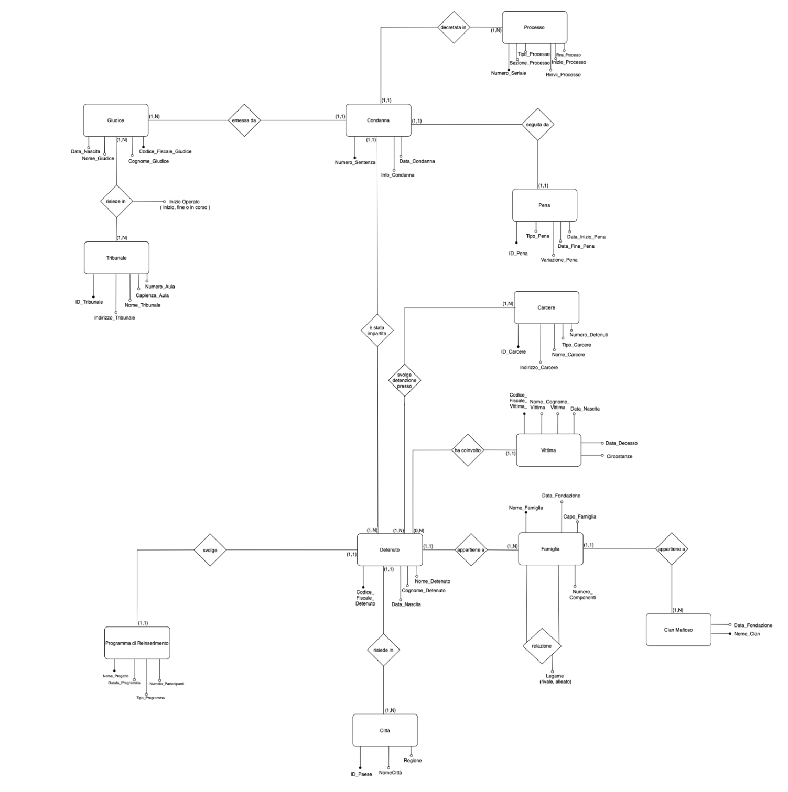
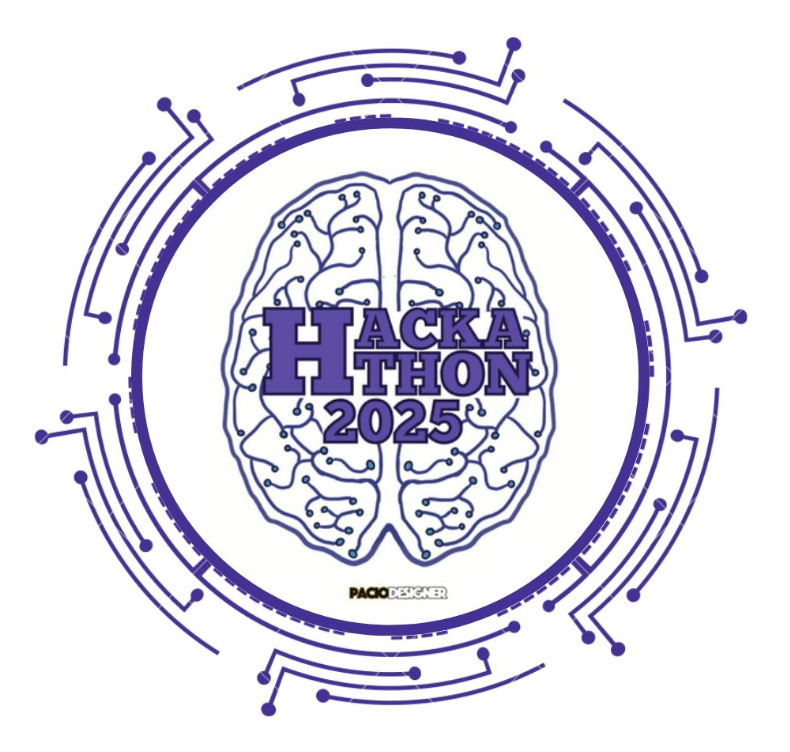
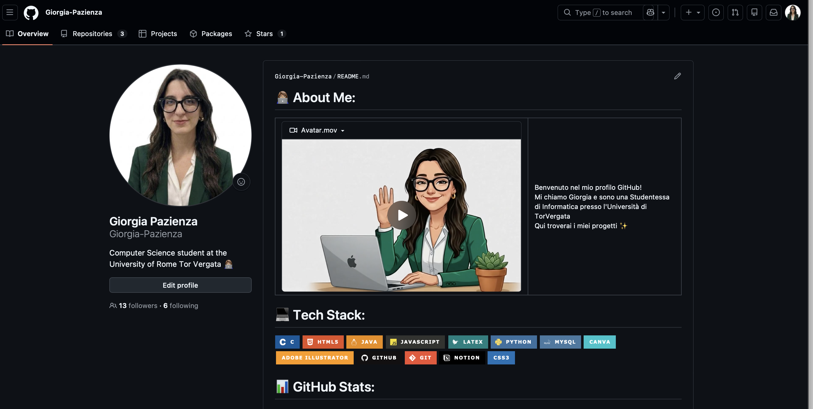
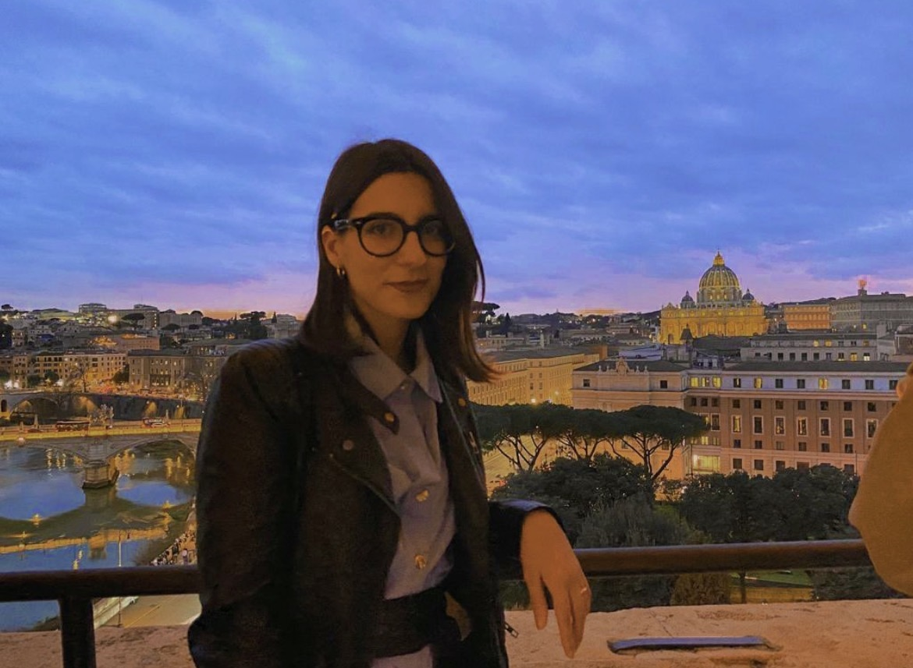
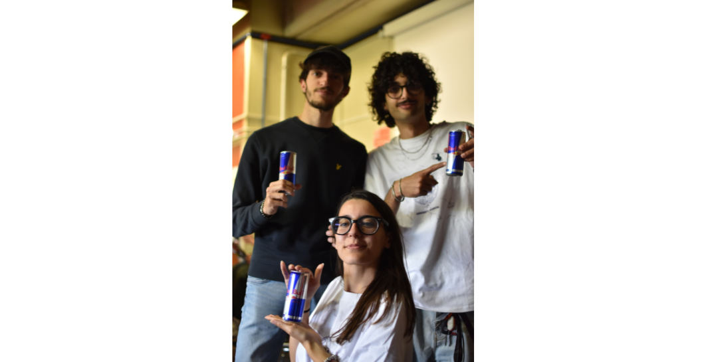
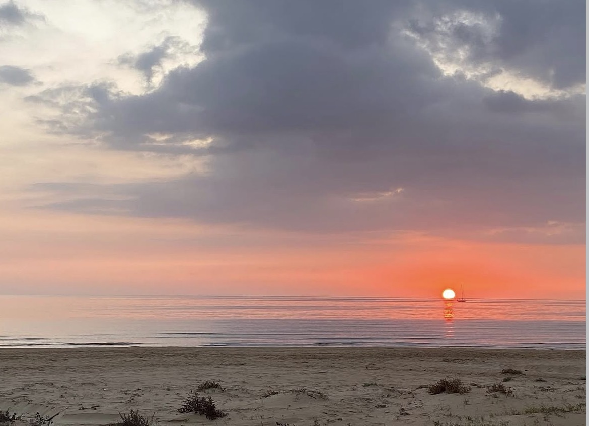
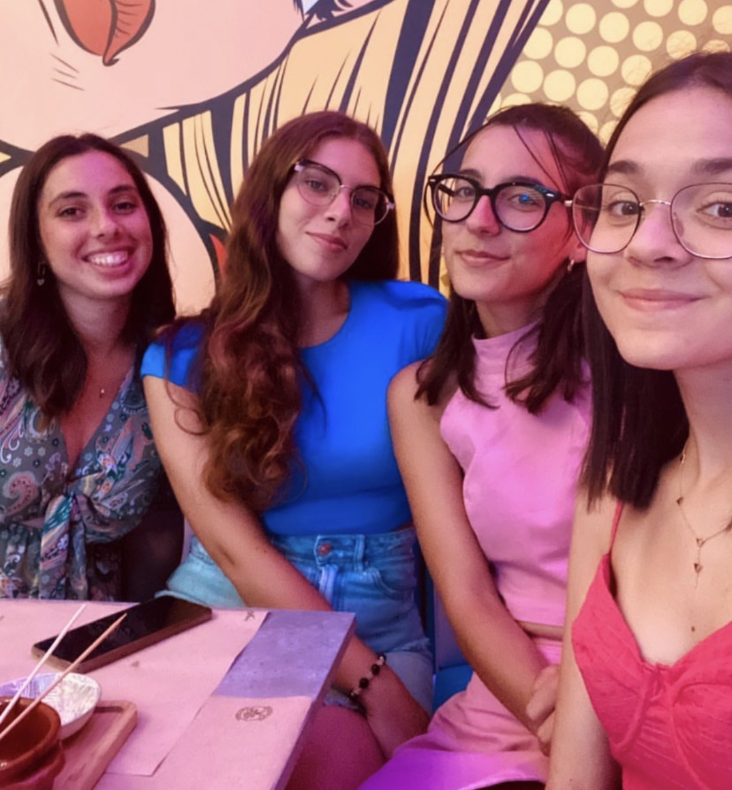

I linguaggi che conosco sono:
Ecco i miei Progetti!
Antimafia DataBase
Progettazione e implementazione di una base di dati relazionale ottimizzata per mappare, archiviare e catalogare tutte le informazioni relative ad ogni detenuto associato alla criminalità organizzata.

Software Hackathon
Progettazione e modellazione architetturale di una piattaforma per la gestione di competizioni Hackathon. Il progetto definisce l'intera struttura dell'applicazione utilizzando lo standard UML e copre l'intero ciclo di ingegneria del software.

ChatBot Turistico
Un assistente virtuale e interattivo progettato per guidare gli utenti alla scoperta di attrazioni, monumenti e curiosità locali all'interno di un sito web generico (es: sito comunale).
GitHub
Esplora il mio profilo GitHub per consultare il mio percorso di studi triennale, troverai appunti, esercitazioni pratiche, spiegazioni e quant'altro...

Tra la Sicilia e Roma




